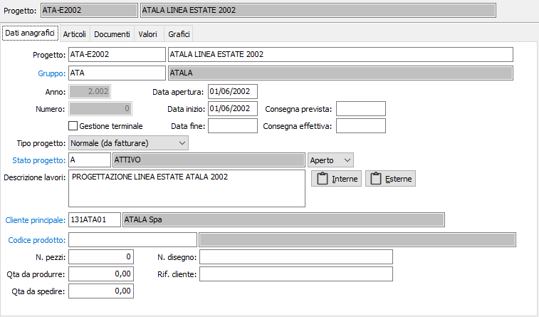

Dati anagrafici

PROGETTO: codice alfanumerico di 15 caratteri a libera scelta dell’utente, che individua il progetto. Sul campo è attiva la ricerca (F9) sulla tabella stessa.
DESCRIZIONE: campo alfanumerico di 50 caratteri per descrivere il progetto.
GRUPPO: indica il gruppo di appartenenza del progetto, viene utilizzato per aggregare in fase di analisi più progetti. Sul campo sono attive le funzioni di ricerca (F9) e manutenzione (CTRL+W) sulla tabella stessa.
ANNO/NUMERO: indica l’anno di apertura e il numero progressivo all’interno dell’anno del progetto; sono attivi solo se è spuntato il flag “Gestione numero progetto” nella configurazione del modulo.
GESTIONE TERMINALE: se spuntato definisce che per la lettura dei dati relativi alla manodopera vengono utilizzati o meno sistemi di rilevazione automatica (prestazione non ancora attiva).
DATA APERTURA: indica la data di apertura del progetto, quando è stato creato.
DATA INIZIO: rappresenta la data di inizio dei lavori sul progetto.
DATA FINE: rappresenta la data di fine dei lavori sul progetto.
CONSEGNA PREVISTA: Indica la data in cui è prevista consegna del progetto.
CONSEGNA EFFETTIVA: Indica la data in cui viene effettivamente consegnato il progetto.
TIPO PROGETTO: Combo box che indica se il progetto deve essere fatturato oppure no. Valori ammessi: normale ( da fatturare ), sotto contratto di manutenzione (da non fatturare).
STATO PROGETTO: lo stato è gestito attraverso due indicatori, uno gestito automaticamente dalla procedura rappresentato dal combo box che può assumere i valori Aperto, Chiuso e Sospeso, e dalla tabella di stato che in maniera manuale permette di definire l’effettivo stato del progetto (ad esempio attivo, in verifica, in consegna, ecc.). Su quest’ultimo campo sono attive le funzioni di ricerca (F9) e manutenzione (CTRL+W) sulla tabella stessa.
DESCRIZIONE LAVORI: Campo memo per inserire una descrizione aggiuntiva dei lavori che verranno svolti per quel progetto.
PULSANTI NOTE: accedono ad ulteriori campi memo per inserire note di utilizzo futuro.
CLIENTE PRINCIPALE: Codice alfanumerico di otto caratteri che indica il cliente principale del progetto. Sul campo sono attive le funzioni di ricerca (F9) sulla tabella stessa.
CODICE PRODOTTO: Codice alfanumerico di 22 caratteri che indica l’articolo del progetto ( campo facoltativo ). Sul campo sono attive le funzioni di ricerca (F9) e manutenzione (CTRL+W) sulla tabella stessa.
N. PEZZI: indica il numero di pezzi da produrre per il progetto.
QUANTITÀ DA PRODURRE: indica la quantità da produrre dell’ articolo.
QUANTITÀ DA SPEDIRE: : indica la quantità da spedire dell’ articolo.
N. DISEGNO: campo descrittivo per inserire una descrizione o un numero riguardante un eventuale disegno tecnico del progetto.
RIF. CLIENTE: Campo descrittivo che indica il riferimento del progetto nei confronti del cliente principale.